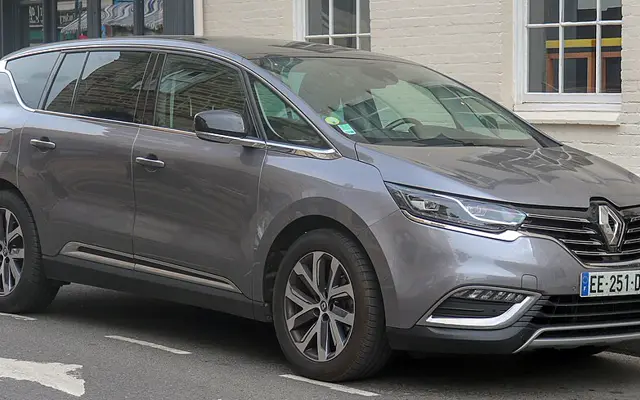

Par Motor › Precios por modelo › Renault Espace
Precio de segunda mano · noviembre de 2026¿Cuánto vale un Renault Espace de segunda mano?

Precio justo estimado de un Renault Espace usado en España, año por año, con los kilómetros normales para su edad y en buen estado: de 5.400 € a 47.100 €. Para tasar el tuyo con sus kilómetros reales y su estado, usa el tasador gratis.
Precios del Renault Espace por año
Espace IV (2002–2014)
Precio de nuevo: 2.0 140 CV, 30.000 € · 1.9 dCi 120 CV, 31.000 € · 2.0 Turbo 170 CV, 33.000 €
| Año | Km normales | 2.0 140 CV · Gasolina | 1.9 dCi 120 CV · Diésel | 2.0 Turbo 170 CV · Gasolina |
|---|---|---|---|---|
| 2014 | 100.000 km | 13.000 € | 13.200 € | 14.300 € |
| 2013 | 100.000 km | 12.200 € | 12.200 € | 13.400 € |
| 2012 | 100.000 km | 11.300 € | 11.300 € | 12.500 € |
| 2011 | 100.000 km | 10.500 € | 10.500 € | 11.600 € |
| 2010 | 100.000 km | 9.800 € | 9.800 € | 10.700 € |
| 2009 | 100.000 km | 9.100 € | 9.100 € | 10.000 € |
| 2008 | 100.000 km | 8.400 € | 8.400 € | 9.200 € |
| 2007 | 100.000 km | 7.800 € | 7.800 € | 8.600 € |
| 2006 | 100.000 km | 7.200 € | 7.300 € | 8.000 € |
| 2005 | 100.000 km | 6.700 € | 6.700 € | 7.400 € |
| 2004 | 100.000 km | 6.200 € | 6.300 € | 6.900 € |
| 2003 | 100.000 km | 5.800 € | 5.800 € | 6.400 € |
| 2002 | 100.000 km | 5.400 € | 5.400 € | 5.900 € |
Espace V (2015–2023)
Precio de nuevo: 1.6 dCi 160 CV, 38.000 € · 1.8 TCe 225 CV, 42.000 € · 2.0 Blue dCi 200 CV, 44.000 €
| Año | Km normales | 1.6 dCi 160 CV · Diésel | 1.8 TCe 225 CV · Gasolina | 2.0 Blue dCi 200 CV · Diésel |
|---|---|---|---|---|
| 2023 | 70.000 km | 27.200 € | 31.300 € | 31.500 € |
| 2022 | 90.000 km | 23.200 € | 29.000 € | 26.900 € |
| 2021 | 100.000 km | 21.300 € | 25.900 € | 24.700 € |
| 2020 | 100.000 km | 21.100 € | 22.500 € | 24.400 € |
| 2019 | 100.000 km | 20.800 € | 21.100 € | 24.100 € |
| 2018 | 100.000 km | 20.400 € | 20.600 € | 23.700 € |
| 2017 | 100.000 km | 20.000 € | 20.000 € | 23.200 € |
| 2016 | 100.000 km | 18.700 € | 19.400 € | 21.700 € |
| 2015 | 100.000 km | 17.400 € | 18.800 € | 20.100 € |
Espace VI (2023–hoy)
Precio de nuevo: E-Tech Full Hybrid 200 CV, 44.000 €
| Año | Km normales | E-Tech Full Hybrid 200 CV · Híbrido |
|---|---|---|
| 2026 | 5.000 km | 47.100 € |
| 2025 | 20.000 km | 39.900 € |
| 2024 | 35.000 km | 37.100 € |
| 2023 | 50.000 km | 34.400 € |
Kilómetros normales: 15.000 al año en gasolina, híbridos y eléctricos, y 20.000 en diésel, con un máximo de 100.000 km (por encima no tasamos: el precio depende demasiado del historial de cada coche). Cifras redondeadas a 100 €.
Preguntas frecuentes
¿Cuánto vale un Renault Espace de segunda mano?
Según el año, la versión y los kilómetros, un Renault Espace usado vale hoy de 5.400 € a 47.100 € en España. El más barato de nuestra tabla es un 2.0 de 2002 (5.400 €) y el más caro un E-Tech Full Hybrid de 2026 (47.100 €). Son precios justos estimados entre particulares y profesionales, con los kilómetros normales para su edad y en buen estado.
¿Qué motorizaciones tiene el Renault Espace?
En nuestra base de datos hay versiones gasolina, diésel y híbrido, en 3 generaciónes: Espace IV, Espace V y Espace VI.
¿Cómo sé si me piden demasiado por un Renault Espace?
Abre el tasador de Par Motor, elige el Renault Espace, el año y los kilómetros reales, y escribe lo que te piden. Te diremos si está por debajo del precio justo (chollo) o por encima (caro). Es gratis y no pide registro ni matrícula.
Historia y curiosidades
Otros Renault
- Arkana
- Austral
- Captur
- Clio
- Fluence
- Kadjar
- Kangoo
- Koleos
- Laguna
- Mégane
- Mégane E-Tech
- Rafale
- Renault 4
- Renault 5
- Scénic
- Symbioz
- Talisman
- Twingo
- Zoe
Compara su coste real
El precio de compra es solo una parte. Mira cuánto te costaría al mes con combustible, seguro, neumáticos, mantenimiento y lo que pierde de valor.
Abrir el comparador →